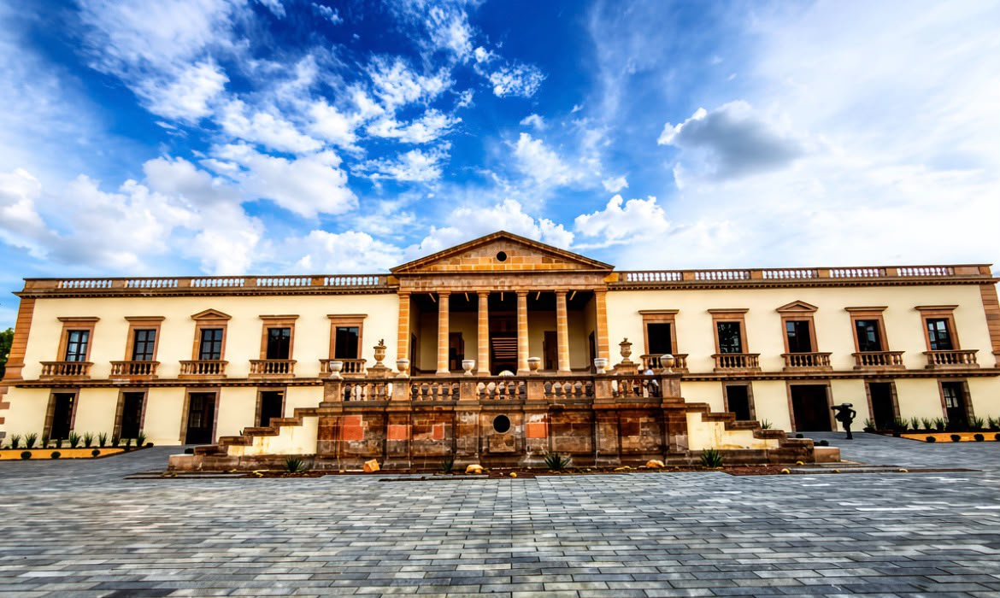
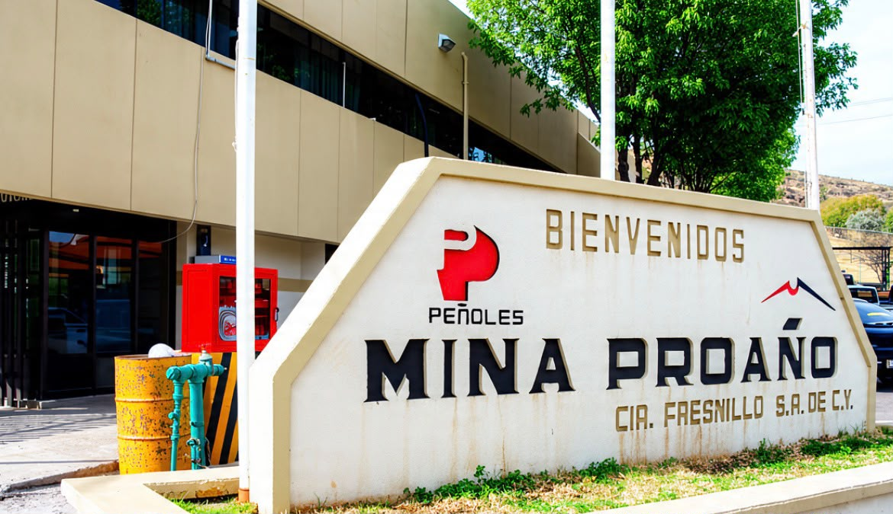

Ágora José González Echeverría
Descubre uno de los edificios históricos y culturales más emblemáticos de Fresnillo.
Conocer su historia →Historia · Cultura · Tradición
Explora la historia, cultura y patrimonio de uno de los municipios más representativos de Zacatecas.
Conoce algunos de los sitios históricos y culturales más representativos de Fresnillo.

Descubre uno de los edificios históricos y culturales más emblemáticos de Fresnillo.
Conocer su historia →
Arquitectura, tradición e historia en uno de los templos más representativos de Fresnillo.
Explorar → Explorar →

Un espacio histórico dedicado a la cultura y las artes en el corazón de Fresnillo.
Conocer más →

Conoce la actividad que ha marcado la identidad, economía e historia de Fresnillo durante siglos.
Explorar minería →